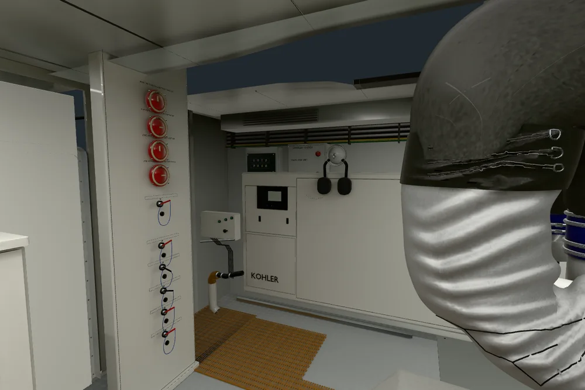
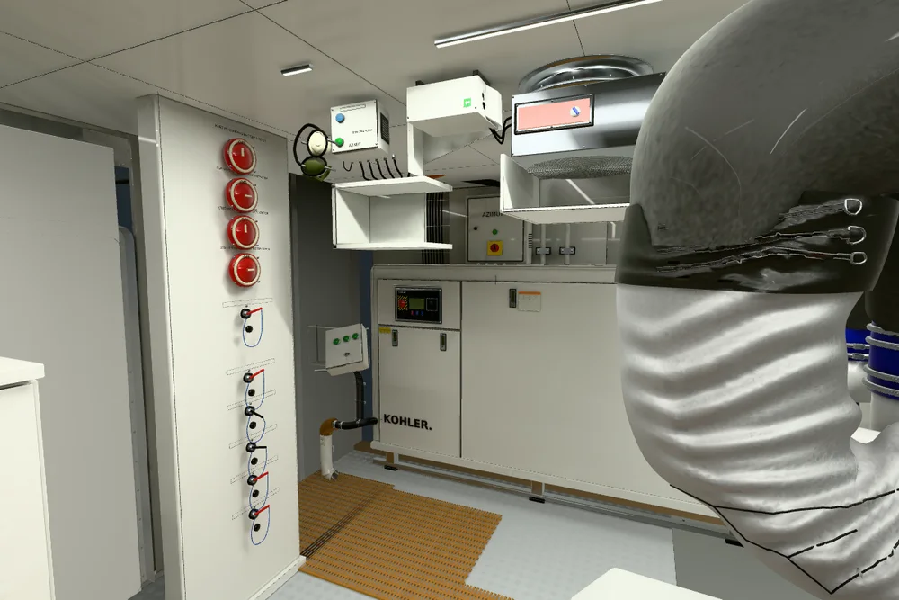
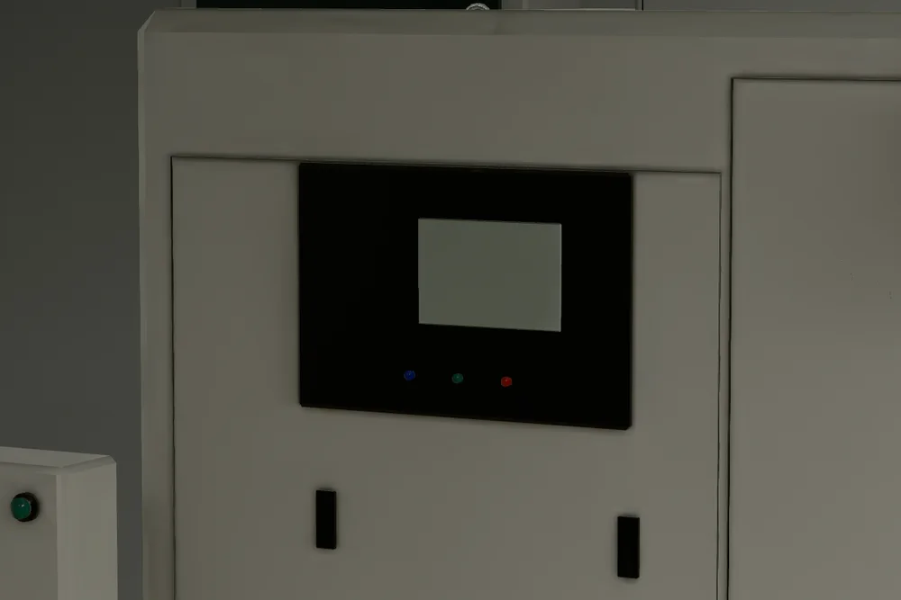
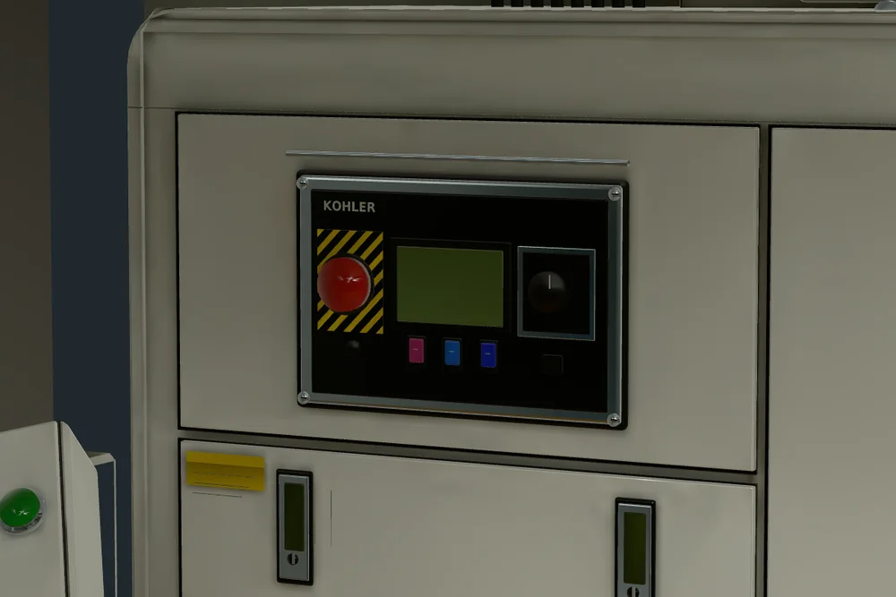
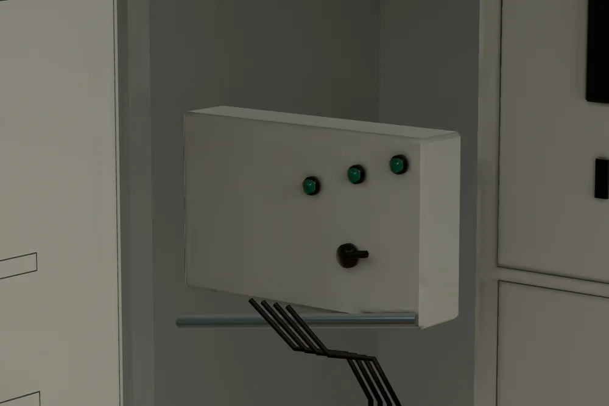
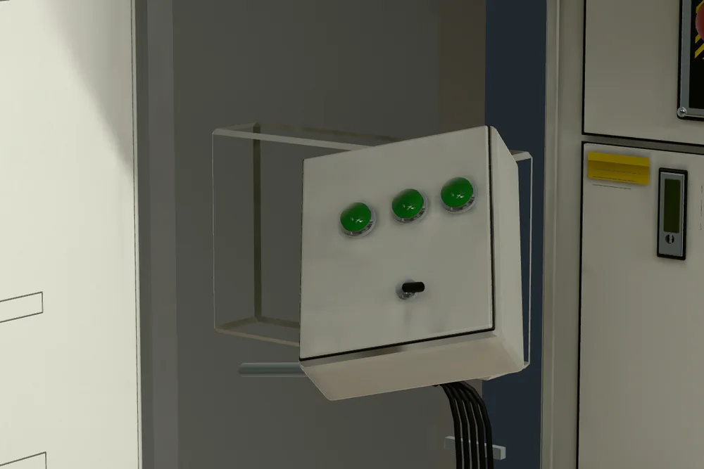
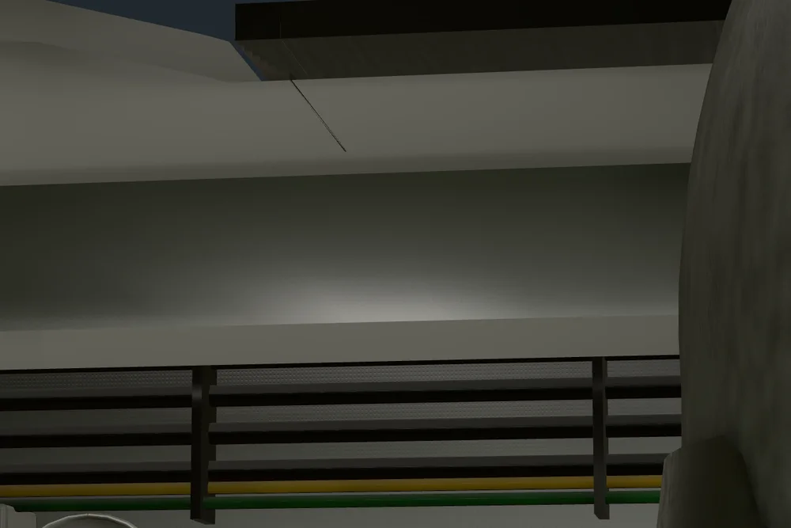
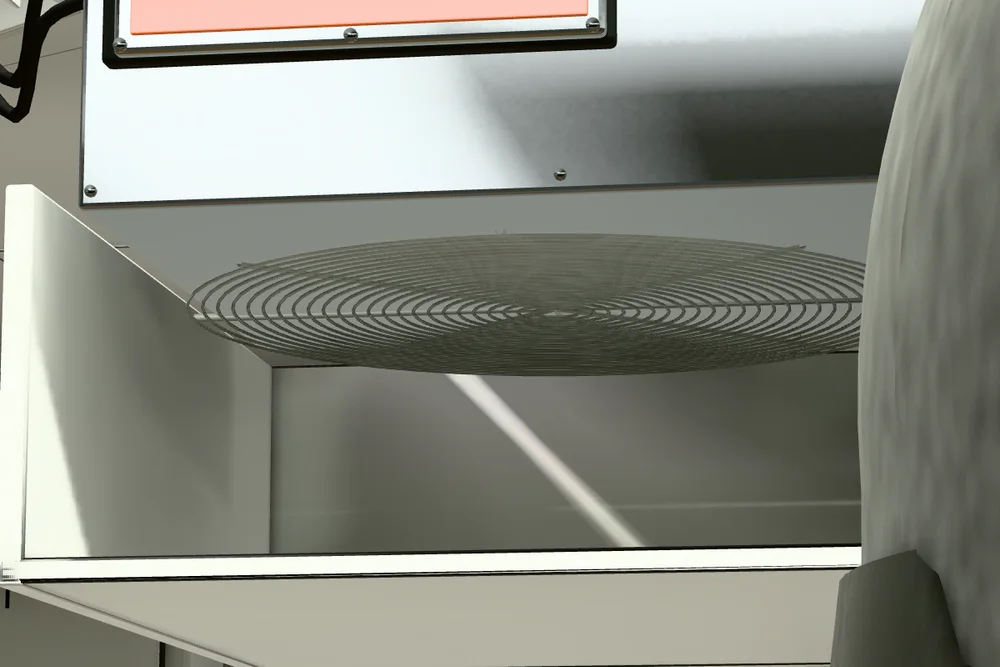

Candidata revisable. Los detalles finos y las profundidades ocultas conservan las limitaciones documentadas.
Se sustituyó el volumen anterior por carcasa con puertas y cierres, controlador con parada roja, pantalla, tres teclas y selector, apoyos, caja auxiliar, manguera continua, intercomunicador y ventilación. Se cerró el hueco local del techo. Ambos motores conservan sus activos.
Abrir la corrección · Blender editable y bakes · Pruebas y límites · Revisión por componente · Fuentes y licencias
Referencias: visita panorámica Grande36M. La comparación privada usa cuadros de8×8 y4×4 píxeles de las imágenes2048², con una sola estación fija. Aquí se muestran únicamente renders propios, desde cámaras iguales.








Los16 puntos de ajuste medidos tienen un error máximo de3.04 píxeles originales. Esto comprueba su colocación y no acredita una coincidencia completa de la fotografía. Las profundidades ocultas y los apoyos son estimaciones. Las pruebas SwiftShader verifican funcionamiento; no establecen FPS de GPU real.